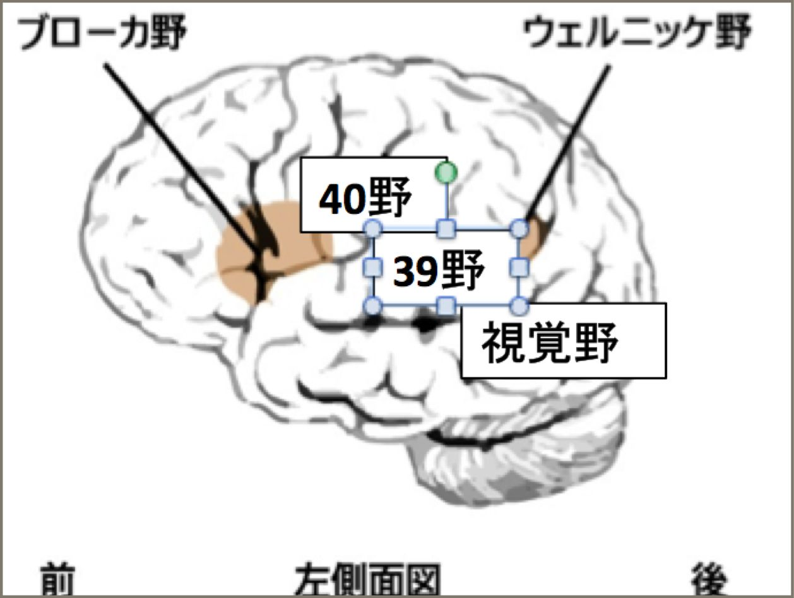

| １日６０秒２１日間、筆で書くだけで自信を取り戻す処方箋 （アバンダンス編）: 毎週日曜日、TVを観てため息をついているあなたへ処方します。 (フューチャーヘルス) | |
| 仲秋 素志 | |
| (2016) | |
１ 日 ６０ 秒 ２１ 日間 、筆 で書くだけで 自信を取り戻す 処方箋
（アバンダンス編）
毎週日曜日、TVを観てため息をついているあなたへ処方します。
健康伝道師 仲秋素志
本書を購入してご縁をいただき
本当に
目次
はじめに
この度は「筆文字セラピー（デトックス編）：１日６０秒書くだけで、自信を取り戻す処方箋」をお買い上げいただきありがとうございます。
「筆文字セラピー」は２部構成になっております。
本書を読んでまず自分を癒していただくこと（前編：アバンダンス編）と言えたら、前をむいて自分らしく活躍していくステージを作っていくこと（後編：マニフェスト編）
この順番が重要だからです。
なぜなら自分が癒えていないのに、他の人を癒したり施す
ことは難しいです。
骨折で重症なのに、他の人の治療はできないですよね？
全体図で表すと、つまりこういうことになります。

この図の下半分のマイナスの部分からまず抜け出す必要があります。
またこの書籍は、この本のとおりに実践していただくだけで、心の傷が癒えて前向きになれるものになっています。
うつ病や自殺者、ストレス性の病気は右肩あがり
不景気が続き、もう何年になるでしょうか？
格差社会になり、貧富の差はひらき、独身者もふえています。
また軽度から重度のいろいろなうつ秒の方がふえています、仲には簡単に自殺までしてしまう人があとを絶ちません。
この数字は、毎年、残念ながら右肩上がりに上昇しています。
なぜこのようになってしまったのか？原因はいろんなところにあります。
本書を通じて、より多くの人が自信を取り戻し、自分らしい生き方を取り戻して、社会が活性化されるのを望んでいます。
自己紹介
はじめまして、私の名前は、
仲秋素志と申します。
私は、物心ついた時からずっと人のいいなりになっていました。
親のいいなり、世間的には大人しくていい子です。そして学校でも、先生のいうことをしたがって行動する、真面目な子供でした。
その反面、とても消極的な人間で、人見知りも激しくて、小学生のときには友達はほとんどいませんでした。これで勉強ができたかというと、そうでもなく、特別な技術があったか？というとそうでもありませんでした。
いたって目立つこともなく、オール３の成績で、学校の中では存在すら感じさせないような空気のような存在でした。
そんな自分を自分でわかっていたのもあって、中学生のときから、これではいけないと思って、必死になって勉強をしましたが、勉強のせいか、成績は伸びました、しかし、自信のなさだけはどうにもならず、受験で上がってしまい、受験に失敗をしました。
そんな私は、その失敗をバネにまた頑張って勉強をし、大学に合格をすることができました。理系が得意だった私は薬学部に入りましたが そこでまっていたのは、人見知りで、友達ができないということでした。自分を責め続けた４年間でしたが卒業し、見事薬剤師となって人の健康に関わる職業について今にいたります。
そして社会人となっても人見知りが続いた社会への適応ができず昨日が続きました。
私がなぜ、本書を書こうかと思ったのは、私自身の生き方と併用して、薬剤師となって、病気の動向をみてきて世の中のストレスと健康の右肩上がりの状態をなんとかしたい、そのように思ったからです。
そして、いろんな人をみてきて、健康になる方法を勉強してきました。
その中でみえてきたものが、薬では健康は手に入らないという現実、そしてどんどん薬は増えていくという現実、とりわけ、ストレスに関するものは減っていかなかったというのが特徴的でした。
私自身も自信のない自分への克服もしたいと消極的な人生をかえたい、もっと自分のやりたいことをみつけたいと思って試しました。
ところが、一時的にモチベーションがあがってもまたさがったり、やりたいことがみえなかったり、いいわけをはじめる自分がいて余計にストレスがたまっていきました。
もう、私の中の心の雨は永遠に止まない。そう諦めかけていた。そのときにであったのが筆文字でした。
この筆文字にであったことで、自分の心に自信がもてるようになり、人と積極的にかかわれるようになり、さらには人前で話すことができることになりました。
私は薬剤師として人とかかわり、またセミナー講師として独立することができ、いま活動ができています。
この本で、その方法をお伝えさせていただき、私の経験が多くの人の役にたっていただけたら幸いと思います。
第１章 自信とはなにか？
「あなたは自分に自信がありますか？」という質問に
「はい」と答える人は、日本人にはあまりいません。
日本人には謙遜という文化があり、これが手伝っているのですが
それはなぜだと思いますか？
自信という言葉、はよく「自分を信じる」ことと思っている方がいらっしゃいます。
では、もし、この言葉にかえて再度、聞いてみるとしたらどうでしょうか？「あなたは自分を信じていますか？」という言葉にかえてみると
これで、「はい」と答える人が多くなったと思います。
「いいえ」は、自分を信じることができないということです。
これは後ほど、でてきますが従来のうつ病と新型うつ病との違いとも言えます。
前者の自分を信じているけど自信がない、これは「他人にどう思われるのかが怖い」とか「失敗したら怖い」とかにつながります。
そして後者の「いいえ」に関しては、自分の意見を持っていない「自分の意見を信じるのが怖い」ということになります。
実は、この質問の答えを導きだすのに
おそらく、こういう裏の心理が働いていないでしょうか？
私は自分の意見を信じたくない
私は他の人の意見を信じなければならない。
恐怖の裏の声には実は欲が隠されています。
「失敗したくない、成功だけしたい」「他人からよくみられたい」などがありませんか？
こうしたものは、どんな人も持っている感情ではあるのですが
少しほりさげると我々、今を生きる日本人の文化に原因のひとつがあります。
１−１ なぜ、自信がなくなってしまうのか？
あなたは決して悪くなかったのです。
いままでの教育や育て方が、自信をなくすような育て方だったからなのです。
では、親が悪かったのか？学校の教育が悪かったのか？
こう聞かれたら、それも違います。
おそらく、この本を読んでいただいている方のほとんどが大人だと思います。年代によって時代背景が違いますので、一概にはいえないところはありますが、
それは戦後の日本の状態にありました。
戦後は、食べることや経済発展に必死な状態でした。
みんなが、同じ方向に向かって、成長しなければ、発展は考ることができなかった時代です。みんなで協力して発展するのに必要なのは、同じ教育をすることで、組織を作って、企業をたくさん作ることが目的でした。
経済の発展には、一貫した教育が必要だったということです。そして優秀な知識をもった人間を育てることが必要な時代だったのです。
企業は履歴書をみて学歴で判断する時代でした。高学歴が、会社では評価が高い時代でした。そのため、親は子供に必死に勉強をするように子供の教育をしていきます。
すると、子供は親のいうことが正しいと判断しますので、そのまま個性のない、人間にそだっていきます。自分の意見も個性もだせないまま育ってしまうのです。いい大学をでて一流の仕事につくことが、夢と勘違いさせられてきてしまうのです。
社会に入るといままで、会わない人とも会うことがあります。会社やそれ以外の場所でもそうです。そこで、いままでの世界が幻のように感じます。
会社の中では、会社のルールにしたがって、働いていくことが多い中、同期は出世していったり、結婚したりと人との差が、わかりやすく目立つようになり不安を感じます。
そして、失敗をすると、なぜ自分ばかり、こんな人生になるのだと思うようになります。
次にやってきたのは、パソコンや機械の普及です。技術がおいつき機械化されてきた影響で、人が不要になり、リストラや派遣切りなどがはやりました。
自分は、会社や社会に必要とされていないと思うようになります。
これが、昭和に生まれた方が鬱になる特徴です。
ゆとり教育世代は少し背景が違います。
ゆとり教育は、人との優劣をつけないようぬする教育が主でした。なので怒られるということがほとんどなく、危機感というものを感じにくくなりました。
そのため、自分の勝っているところも弱点もわからない、人と比較しない、生き方を学びます。
ゆとり教育は平等を目指した教育でした。
ゆとり教育をいれたおかげで、自分の時間がふえますが、
昔は、外で遊んだり人とリアルで接することも多っかったですが、コミニケーションをとる媒体が、電話から携帯、メール、パソコンと変化していきました。
人の顔がみえない会話、感情を感じ取りにくいコニミケージョンのおかげででてきた副作用は、リアルで人とコミニケーションをする人が苦手な人がふえたことです。
そのおかげで、怒られることにもなれていない世代は、すぐに会社をやめて働く気がしない、こういう新型のうつ病 というものがはやっています。
私は、この２つのうつ病は
大きくわけると自覚の有無だと思います。
どちらももモチベーション、気力がおちたものですが
風船で例えると、前者は風船は一度膨らんだがしぼんだ風船で危機感からくる不安がある状態
後者は、風船に空気すらいれない状態、危機感すらない状態です。
前者後者ともに、自分のせいではないというお話をお伝えしてきましたが
では教育がかわるのを待つのか？という話になります。
相手はかえることもできないし、教育だってすぐにかえることができません、そしてすでに学校は卒業してしまっています。
では、どうしたらよいのか？
まず、自分の今の状態に気がつくことが必要です。
前者の方は、おかれた状態はわからないけれど、ただ焦っている状態で足元がみえていない状況です。
後者、今自分のおかれた状態がわかっています。しかしそこが安心だと思いこんでいます。
１−２ 情報は多いほど混乱する
昔は新聞やTVなどで口コミで情報をあつめていました。
ところが今はインターネットが普及したことで、すごい数の情報であふれています。
その中で
どうやって生きたらいいのか？
簡単です。
それは、自分で選んで決める、それだけです。
しかし、その単純な行動ですが、その際に一番重要なことは
「自分は、どのように感じるか？ 」です。
特に、一番おおきな、情報は自分で経験したときの情報です。
自分で実際に経験したものというのは。目でみて、聞いて、触れて、知っていることだからです。
そのとき、自分はどう感じたのか？これをなんとなくですごしてしまうとどうなるのか？
その場、その場の感情に流されてしまう現象が起こります。その結果、自分の気持ちがわからなくなり、自分を見失ってしまいます。
自分の気持ちと向き合うにはどうしたらよいのか？
自分の気持ちはどこからやってくるのか？それは
こういう仕組みで自分の感情がわいてきます。
赤ちゃんのころは、自分の気持ちを素直に表現します。
言葉がまだ話すことができないために、泣くという行為で表現するのですが、例えば悲しい、嬉しいという表現を制限することなく表現します。
ところが大人になるとなぜこれが表現しにくくなるのか？それはそれをしないメリットがあるからです。

例えば、両親に子供のころにこう言われた男性に多いのではないでしょうか？
「男の子なんだから泣かない」もしくは
「長男だから我慢しなさい」
この時に、わがままをいったり、感情のまま泣いたら親を悲しませるとか、嫌われるとか、愛してもらえないとかそう直感で思った経験はないでしょうか？
そうすると、自分の中で、感情を出さなくなってしまいます。
感情をださないままでいると、自分の感情に向き合えないままになって、蓋をしてしまいます。
この状態で、大人になると同じ出来事がおきたとき、その両親に似た人をさけようとしたり、怒られるのが苦手になったり、して行動にうつせないときがあります。
これを「メンタルブロック」といいます。
メンタルブロックは、自分では気がつかない意識
に入っているため、顕在意識ではなかなか気がつくことはできないです。
１−３ ポジティブ思考の罠
少し前までポジティブに考えなさいというやり方が流行りました。
このポジティブ思考には大きな落とし穴があります。
それはネガティブな思考や感情に蓋をしてしまうことです。
本当は思ってもいないのに、感情をおさえてポジティブな言葉をむりやり発したり、行動すると思うと、かえってストレスになってきます。
それは自分の本当の心と逆の行動をしているということになるからです。
かといって、ずっと悲しいなどネガティブな気分でいるわけにはいきません。なので、自分の気持ちをしっかりと理解してあげることが重要です。
それが無意識の意識の中にあるのです。
つまりこの意識の背景には
ポジティブでなければならないという背景があります。
もともとネガティブに考える思考というのは義務感から発生しています。
むりやりポジティブになろうとすると、先に〜しなければならないという意識が働いて、ストレスがたまって、ポジティブになれない自分がいたりすることでネガティブに余計になってしまうのです。
１−４ 無意識の意識
先ほどのメンタルブロックを含めて、自分で意識しないである意識を潜在意識といいます。
例えば先ほどの親を悲しませるという意識だったり、自分の思考のくせ、生活習慣など、体を動かしている自律神経などは、潜在意識といって自分でコントロールできない意識のことです。
そのほかにも、人間が遺伝的に持っている意識、例えば恐怖という感情だったり、安心したいという意識、これらは、人間が生きのびるために、遺伝子に組み込まれている意識です。
意識している顕在意識と潜在意識の割合は、
意識の全体を１００％だとして
顕在意識＝３％
潜在意識＝９７％
くらいと言われています。
９７％も無意識の領域となっています。
これは、自分ではなかなか気がつかない意識です。
メンタルブロックもこの中に含まれています。
第２章 自信を取り戻す戦略
第１章では、なぜ自信をなくしてしまったのか？それについて、お伝えしてきました。
もし、この章から読んでいる方がいらっしゃたら、もどって第１章を読み直していただければと思います。
なぜ、原因を知る必要があるのか？
それは、病気と同じで、我々は、まず体の不調があったときは、病院にいくと思います。
その際に、不安や恐怖というものがあります。
「大きな病気だったらどうしよう？」
とか「なぜこの不調がおきているのか？」
原因を知るためです。統計的なデータがあるのですが、原因がわかっただけで安心して、病気が半分は治ってしまうという結果もでています。
なぜ不安や恐怖があるのか？というと、その不安の中身にもよりますが、その原因を知りたいということです。
なので、病気の正体が不安という方は、これで安心しますし、どれくらい期間がかかるのか？という不安は、お金がどれくらいかかるとか、家族の心配とか、そういうものが不安ということがわかるのです。
原因が分ければ、自然とそれについてどうしようか考えるのが脳です。
それだけで５０％は、改善されたようなものです。
つまり 第１章を読んでいただければ５０％は自信を取り戻したということになります。
２−１ 自信を取り戻すのに大事な土台
自信を取り戻すのに必要な土台があります。
次の２つの土台の上に自信がなりたっています。
①自分を信じてくれる人の存在
②人を信じることのできる自分
この２つが自信を取り戻す大事な土台です
①自分をしんじてくれる人の土台
これは、簡単にいえば人脈のことです。人はひとりではいきていけません。自分という人物を愛してくれる存在とつながっているということが、安心とやる気を生みます。
そのために必要なことは、自己開示の力です。本書のワークと筆文字を取り組むことでしっかりできるようになりますのでご安心ください。
②人を信じることのできる自分
ミラーリングという言葉があります。ミラーリングは目の前にいる人は自分と同じということです。相手を信じることができるということは自分を信じることができるということです。
相手を愛することができるかどうか？人と誠実に向き合えるかどうか？です。これも自分の感情に向き合うことで、それがしっかり解決していきます。
２−２ 自分の位置を確認する
まず、自信がなくなってしまった状態というのは、第1章にもお伝えしたとおり、自分を信じず、森に入って、迷子になってしまった状態のことをさします。
ではこの迷子からどうやって脱出するか？
もし、あなたが迷子になってしまったらどうしますか？
おそらく現在位置を確認するのではないでしょうか？
自分の位置を確認するには、自分を客観的にみるひつようがあります。
山登りをしている最中、自分のいる位置を正確につかむためにいろんな情報が必要です。
自分を客観的にみる方法は何種類かあります。
例えば、
このりんごという概念を捨てて（りんごの情報をなにもいれないで）りんごを客観的にみるならどうしますか？

①なにかと比べる
②人に判断してもらう
③一歩ひいてみてみる
④見る角度を変えてみる
①なにかと比べる
人はなにかとくらべないと評価できないです。「井の中の蛙」と同じ状態です。
例えば、りんごなら バナナと比べたり、メロンやスイカと比べたりします。
なにかと比べることで、自分が今、おかれている状態を判断できます。
しかし、これは比べるものによって一喜一憂してしまうという弱点があります。
大きいからいい小さいからいいとか、甘いからいいとか酸っぱいからダメとかです。
②人に判断してもらう
自信をなくしてしまった原因にこれがあります。これは、人に判断してもらって、悪い方向に勘違いを続けてしまった結果です。
よい方面に導いてくれるような判断をしてくれる人ならよいと思います。
③一歩ひいてみる
例えば、りんごを自分の目と１cmの距離でおいてください。なにが見えますか？
赤いもの、繊維とか、匂いとか感じるものがあります。
しかし、５m離れてください。
みえる感覚や大きさが違ってきます。
いかがでしょうか？
りんごは丸いという情報が入ってきませんでしたか？しかも、実は木になっていたりんごをみていたことに気がつきませんでしたか？
これが一歩ひいてみるということです。

④みる角度を変えてみる
りんごもみる角度によっては違ってみえることがあります。そして切ってしまえば、また断面の色は違いますし、形も違います。
そして視覚的なものでなくても、食べたい匂いを嗅ぐことで、新しい情報が入ってきます。

２−３ メンタルブロックに気づくには
ではどうしたら、メンタルブロックに気づくことができるのか？といいますと、自分で体感することが必要です。
一番有効な方法は書き出すことです。なぜ書き出すかというと、具現化しないと人はなかなか理解しようとしません。
それが目に見えたものであれば理解しやすくなります。
人間がなにかを感じるときというのは５感を使って感じます。
五感とは視覚、聴覚、味覚、臭覚、触覚（体感覚）のことです。
通常の人間はこの感覚の割合が
視覚・・・・・87%
聴覚・・・・・7%
触覚・・・・・3%
嗅覚・・・・・2%
味覚・・・・・1%
と言われています。
これらは鍛えれば、数値はかわってきます。例えば、音楽家は聴覚がきたえられ、料理人なら味覚や臭覚がきたえられているため、数値は変わってきます。
しかしほとんどの方が目でみたものを情報として多くとらえています。
したがって、目で確かめるのが一番理解をしやすいのです。しかも、書くのは、絵などではなく、文字で書くことでより理解が高まります。
人間は５万回１日に自分と会話をしているそうです。
実際、言葉にださなくても思考として会話しているそうです。
その中で、質問がでていたり、ジャッジするような会話をしていたりといろいろあります。
これはのちほどでてきますが言葉を使うことで、フォーカスできるのです。絵だといろいろなイメージができてしまいます。言葉で書くことで明確なものがでてきます。
２−４ 自分の感情に向き合う
もし、目の前に幼い子供がいたとして、その子が泣いていたらどうしますか？
泣いているのをまずなだめて、どうして泣いているのか？を聞くと思います。
幼い子供は感情をおさえるということはしません。
しかし、大人は周りの目を気にして、感情をおさえています。
なので、困っている様子をみても、感情をあらわにしないため、人はあまり声をかけてくれないのです。
もし、この子供のように、感情を出すことができたら、そこから解決の糸口がみつかるのです。
これらを自分でやる場合には１人２役でやる必要があります。
もうひとりの、自分を客観的にみて自分の感情をたしかめることです。
２−５ ストレスのデトックス
メンタルブロックの原因をつくったのは、そもそも感情です。感情にはいろいろな種類があります
悲しい、怒り、憤り、怖い、不安、恐怖
などなどです。
逆に嬉しい、楽しいなども感情です。
これらをまた経験したくないから、メンタルブロックがかかり、行動をさけてしまうのです。
そもそもストレスはなぜ発生するのか？
それは自分のおもいどおりにいかないと感じるからです。
思い通りにいっていると感じればストレスを感じることはありませんし、そもそもストレスとは裏返せば、そうなりたいという欲があるということにもなります。
しかし、これは無意識で、思ってしまうことなので、実際は、この感情をまず知ること、そしてそれがどこにあるのか？をしることが大切となってきます。
そのために、感情を吐き出す（デトックス）の作業が必要になってきます。
病院の例でいえば、自分の自覚がうすい症状に対して、検査などをしていき、目でみえるものにしていくという作業にあたります。
つまり、病気でいうのであれば、体です、体が正常に踊りたいから、どういう反応をしているのかを知ります。
ここでは自分のこころと向き合うということになります。
心が、どういう訴えをしているのか？を知ることです。
２−６ MをWにかえる
先ほど、ストレスは自分の思い通りにならないからたまるということでした。そういう状況というのは、他人に支配されている状態で、我慢している状態といえます
これがMの思考です
Mの思考とは、英語のMsut （〜しなければならない）という思考です。
このとき、体からはストレスとなるホルモン
アドレナリン、ノルアドレナリンがでています。これらが怒り、不安、恐怖といったものを感じさせています。
もちろん結果として体に影響がでてきます。続けば病気になってしまいます。
反対にWの思考、英語のWant to(〜したい）です。これがチコトロピンやコルチコトロピン、ドーパミン
そして脳内麻薬と言われる エンケファリンやエンドロフィンを分泌して、幸福感を感じることができます。
※補足
【アドレナリン】
交感神経が興奮した状態で、闘争や逃走のときに使われる動物の本能でそなわったホルモンで、自分の身を守るために分泌されます。アドレナリン は主に肉体（筋肉や血管）に作用して、運動能力を高め ます
【ノルアドレナリン】
セロトニンやドーパミンとともい三大神経伝達物質で、ネガティブ感情が続くと分泌されます。脳（精神）に作用して、感情の昂ぶりやイライラ などを生み出すアドレナリンを分泌するのにも影響しています。
【チロトロピン】
自分の将来の為に集中するホルモン。
きっと勝てる！ きっと俺はやれる！という自分への期待、チャレンジな気持ちの時に活発になるといわれている
【コルチコトロピン】
現在行っている、（練習やCW等）目の前の事にビシッと集中してる時活躍するホルモン。
【ドーパミン】
過去に集中している時に活躍するホルモン。
今日もよく頑張った！という充実感や、勝ち試合の後の満足感。
明日のやる気が生み出される。そんな幸せをかみしめている時に活躍するホルモン。
２−７ すべてのことに感謝する
成功している人は、よくいわれることですが、感謝をするということ。
いままでおきたことはすべて意味があるということです。
自分だけ、なんでこうなるの？感謝できないという方がいらっしゃいます。
しかし、これらは、自分がみた側面が悪い側面だったからなんです。
なにか悪いことがおきたと思ってもそれを学びにかえて得たものがあったはずです。
例えば、ナイフで誤って指を怪我したとします。だからこそ、この道具の正しい使い方を知ることができたのです。

すべてのおきたことは偶然ではなく必然であり、あなたが生きる糧となっているのです。だから感謝なのです。
第３章 自信を取り戻す戦術
前章では、自信を取り戻すにあたって、戦略をたてました。この章では戦術という実際の行動方法についてお伝えしていきます。
前章では、感情を吐き出すということが重要であることをお伝えしました。
感情というものは生き物で、吐き出さないと、いつまでも居座りますし、訴えてきます。
これは、ネガティブな感情ももちろんそうですが、嬉しい、楽しいなどの感情もそうです。
蓋をしてしまうと、あとになって、気がついてもらいたいからでようとして、自分に気付かせるように働いてきます。
３−１ 言葉の力を使う
言霊という言葉を
きいたことがありますか？
言霊とは言葉には、エネルギーや魂がこもっているということを表したものです。
日頃から、愚痴や悪口、ネガティブな言葉を発信していたり、自分の対して無言の言葉でダメ出しをしていたりする人というのは、巡って自分に戻ってくることが多いです。
逆に、人を褒めたり、自分に対しても褒めている人は巡って自分によいことがおこることがあります。
なぜ、こういうことがおこるのか？
２つ考えられます
ひとつは口コミがおこるということです。日頃、人に対して感謝の言葉や人のよいところを見つけるくせがついている人は、相手も自分のよいところをみてくれます。
また、褒められた人は気分がよくなって、このことを人に言いたくあります。そのときに自分の名前がでたときに、この人はいい人だとイメージをしてくれるのです。
人は人にいいものを紹介されただけで、それがとても魅力的にみえます。
例えば、信頼している友人に、あそこのお店すごくおいしいよといわれれば、おいしいと思うのは当然だとおもいます。
もうひとつは、自分の意識のフォーカスをかえることができます。
先ほど、人にいいところをみつけるくせを自分にもしていることで、自分を好きになっていくのです。
自分を好きな人には、人は近寄っていきたくなります。
これが言葉の力です。
３−２ 書くことで記録に残る
それは、歴史から紐とけます。
文字や言葉の歴史はまだ若くまだ人類が言葉を使い始めて
そんなに時間がたっていないといわれています。
人が言葉を発する・・・160 万年前
文字の発明・・・・5300 年前
中国の歴史を例にします。
中国では、５０００年前に易経というものが生まれて、これでいろんなものが表現されていたという話があります。
このころは、文字というより模様のようなものを壁や石、亀の甲羅などに掘っていたそうです。
そして、文字ができるようになり、かけるものも変わってきて
言葉ができてからの人間の進化は、とてつもないスピードで進化してきました。
そこからいろんな、教えがひろがったり宗教などもできてくるようになって情報を伝えやすくなったのです。
これは、言葉がそれだけ人間をかえてきた事実ともいえると思います。
書物を書いたりすることで、人間感のコミュニケーションを高度に進化させてきました。
そして何よりも、記録として残るということです。
先ほど潜在意識には、記録として残っていることがあります。しかし、これらはただ、頭の中に残っているというだけで、後で思い出そうとしてもなかなか思い出せないことが多いです。
記録に残っているからこそ、あとで脳の記憶にアクセスするための材料として役に立てるのです。
文字を書くということは脳にとって、どのくらい高度な作業をしているのかお伝えします。
人の大脳には言葉を話す能力を司る「ブローカー野」と言葉を理解する「ウェルニッケ野」という領域が存在します。
実はこの分野はチンパンジーには存在せず、人類が長い進化の過程において言葉を理解するのにスペースを作ったと思われます。
人類は、文字を書いたり読んだりするのに特化した脳の領域は存在しません。
どこを使っているのか？というと脳のあちこちの機能を結びつけて、もともとある脳の機能をフル回転させています。
以下が脳が文字を理解する順路です。
文字を読むということは以下の手順で理解します。
①視覚野（目でみる）
↓
② 39野 40野
（文字の形を認識
音の形に変換）
↓
③ブローカー野
言葉を理解
することができる
例：
「犬」という文字を視覚情報で認識する（視覚野）
↓
視覚情報でえた「犬」という文字の形を「inu」という音声情報に変換すす。
↓
文字の形から動物の「犬」を認識する
↓
「inu」という音声商法や動物の「犬」を意味するという情報から「いぬ」と声をに出して読む。
長期記憶と短期記憶という言葉があります。
長期に覚えていることというのは、あることをしています 。
最近、こういう風に思ったことはありませんか？
漢字がかけない・・・。
なぜこういうことがおきるのか？
それは、パソコンや携帯で文字をかくことが多くなってしまったからです。
昔、こういうゲームをしたことはありませんでしたか？
背中でも文字の伝言ゲームです。
実際、文字をみたわけでもなく、人の文字が伝わってしまう。
当時は、不思議な感覚はなかったですが、今思うとなぜ？と思います。
実は人は文字を体の感覚で覚えています。
そのときに、おきた出来事があればそれも一緒に記憶していることが多いです。
これが長期記憶となっていくのです。
初恋のキスの味と昨日たべた、夕食のご飯の味と鮮明に覚えているのはおそらく初恋のほうでしょう。
印象が強く、それだけ感情がうごいたほうが覚えているのです。
３−３ 日本人が秘めた能力を最大限生かす
我々、日本人が使っている文字（ひらがな、カタカナ、漢字）は素晴らしいもので
これらは、映像のイメージを与えます
我々の祖先は、もともと、象形文字や、いろんな状態の様子で、漢字を作ってきました。
我々は祖先の遺伝子が入っているため、遠い記憶にその文字に関する、記憶が潜在意識の中に入っていることになります。
つまり漢字を書くだけで、まるで絵や画像ができてしまう能力が我々、日本人にはあるのです。

つまり、日本語は、感情をもっともイメージしやすい表現しやすい文字といえることができます。
したがって、日本語でかくことで感情をイメージしやすいのです。
第４章 筆文字セラピー
いままでの章で書くことで、心のデトックスになり、それが脳に対しても活性化していくことをお伝えしました。
なんとなく書くという行為が脳にとっていいことはおわかりいただけましたでしょうか？
ここからは、本書の筆文字セラピーについてお伝えしていこうと思います。
４−１ 筆文字セラピーとは
これまで説明してきたとおり、筆を使って文字を書くことで、自分の気持ちが楽になり、自信を取り戻すことができるセラピーのことです。
感情を出し、自分の気持ちをしっかり確かめることができます。
自分一人でできるセラピーです。
筆文字セラピーを行うと
自分に自信がもてるようになる。だけでなく自信がついた結果、次のことも解決します。
・人見知りがなくなる
・接触的になる
・人前で話せるようになる
・自分らしく生きられるようになる
・人間関係がよくなる
４−２ なぜ、筆文字なのか？
書くものといえば、鉛筆、ボールペン、サインペンなどいろいろあるなか、なぜ筆で書くことがいいのか？といいますと
硬質のペンでは、よく文字をなぞったり、真似をするドリルなどがあったりします。
しかし、これらが意図しているものは、人に気に入られる、綺麗な文字を書くことを目的としています。
ルールに従った文字の書き方は、結局ルールどおりの生き方しかできなくなってしまいます。
手元がぶれず、丁寧に書くことができるのは、硬いからなんです。
しかし、今回私がお伝えするのは、自信をつけるということ、自分らしい生き方を目指していきます。
自分らしい生き方というのは、ぶれない生き方、そして周りの環境に左右されない生き方です。
そのために、自由に書くということを目的としています。
硬質で書いている文字と、筆で書いている文字では、おそらく腕の動かし方が違います。
硬質で書いているときのほうが動きが少ないはずです。
そして筆には加える力が違うと、線が太かったり、細くなったりします。
これらが、前の章でお伝えした、そこにリズムも加わりやすくなり、体の感覚となって記憶に残りやすくなるのです。
そして、書というものは、もともと易からはじまった、陰陽という中国の哲学から発展しています。
陰陽とは、書道でいうと黒いところ（文字）が陰、白い空白の部分が（陽）です。
文字を書くときというのは、書く前にこの空間の利用の仕方をイメージして書いているのです
この文字の大きさをどうしようか？この棒の長さバランスをどうしようか？など口で言わずとも、無意識でやっているのです。
この空間の使い方で、視覚のイメージ力がまた広がってくるのです。

４−３ 他のセラピーとの違い
では、他のセラピーとはどう違うのか？という点です。
同じアートでいうのであれば、絵を使うようなセラピーもあります。
絵のビフォアーアフターというのは、想像が広くなりすぎて結果がぼんやりしてしまいます。
なんとなくかわった気がするとかなんとなくすっきりしたという感じになりがちです。
カンセリングやヒーリングなどのセラピーは
誘導されている感覚を覚えてしまいますが、筆文字は１００％自分ででてきたものです。
そして、筆ペンを使うので、時間と場所をとらず紙とペンさえあればできるというメリットがあります。
第５章 実践トレーニング
では実際どのようにやるのかについてこちらの章でお伝えしていきます。
５−１ 準備
実際の扱う筆は、なんでもいいのですが、私がオススメするものは、筆ペンです。

アマゾン購入ページはこちら
しかも、先が割れる筆ペン、ぺんてる筆ペンをオススメします。
先がわれることで奥行きを感じて文字に味がでるようになります。
紙はなんでも、構いませんが、できるだけケント紙など、筆やインクが滑ってしまうようなものは避けるようにします。
和紙などは、オススメしますが、練習などでは少し高級なので、画用紙などで書いてみましょう。
オススメは、１００円で売っているらくがき帳のようなものです。
そして、万が一、はみ出してもいいように下に新聞紙を引くようにしてください。
服もできるだけ墨がついてもいいようなもので書くようにお願いします。
紙とペン（なんでも可）をご用意ください。
ペンになれるために
なんでもいいので、線を書いてみましょう。強い線や細い線、筆がどのように動いたら、柔らかくなるのか？
手首を柔らかくする準備運動をしてください。
５−２ 書き出す

ステップ１ ビフォアーを書く
比較をするために、なにもかんがえずに「感謝」もしくは「ありがとう」をかいてください。
 
ステップ２ イメージトレーニング
筆で文字を書く前にするイメージトレーニングです。
１）
ターゲットを決めます。
お母さん、お父さん、友達など......
２)
その人との思い出で昔の出来事で、感情が大きく動かされたこと、してもらったことはなんですか？
思い出してみてください。
例えば
悲しかったこと：
悔しかったこと：
嬉しかったこと：
怒ったこと
などです。

３）その出来事がおきたとき、どういう状況だったでしょうか？
周りに誰がいましたか。何時頃でしたか？（朝ですか？夕方ですか？）
場所はどんな場所でしたか？（家ですか、外ですか？）
どんな音が聞こえていますか？（虫の音ですか？誰かの声ですか？）
もし感情がわきにくかったら
当時のもの、写真、
思い出のある曲
匂いがするもの
なんでも使って構いません。
嬉しい感情はそのまま、悲しい感情も十分に味わってください。
ステップ３ 書き出す
感情が高まって、溢れだしたら
「感謝」もしくは「ありがとう」という文字を書いてください。

＊ポイント
ありのまま思ったとおり書いてください。
周りを気にしない
気持ちに集中して書く
書き順を気にしない
利き手でなくても、持ち方も自由
口に出しながらかいてもいいです
 
ステップ４ ビフォアーアフターを見比べる

ステップ５ 気づきを書き出す
変化や自分にとっての学びはなにか？
書いたときの感情は？
どうしてその感情がでてきたのか？
いままのルールに気がついたかもしれないですし、こういう感情をおさえていたことに気がつくかもしれません。
メモをして残してください。
書くことで、自分の脳に再度インプットしていきます。
ステップ６ 自分を褒める
最後に「私は素晴らしい」という文字を書いてください。
これは自己暗示です。
この変化があるということは成長があるということ気がついたことで、過去の私より成長しているということを自分に言い聞かせてください。
第６章 自信を取り戻す背中を押し、加速する方法
５章までは 筆文字セラピーのマインドセットと実際の方法について説明してきました。
この章ではさらに、自信をつけていく方法についてお伝えしていこうと思います。
心が変われば、あとは行動を起こすのみとなります。
そのために必要なものは、習慣化 です。
人間の脳に新しい回路ができるのが２１日間 と言われています。
いままでやっていなかったものは、なかなか脳が嫌がってやろうとしませんが、２１日間するとあきらめるように脳が回路を作ってくれるということです。
これは、若いからとか、歳をとっているからとはまったく関係ありません。
２１日間毎日やるにあたって、今日１日の出来事について行うとよいです。
今日、終わったことも過去なので、自分の日々の成長につながります。毎日自分を褒めることで、自己肯定感がどんどん高くなります。
MをWに変える
Mとは英語のMust（〜しなければならない）
Wは英語のwant to（〜したい）です
つまり義務感を欲求にかえなければ習慣化できません。
義務感はストレスになります。
そのための方法を次からご紹介します。
６−１ 楽しみながらやる
人は楽しいことでないとなかなか継続することができません。
楽しいと思うにはちょっとしたコツが必要です。なぜ楽しいのか？もしいままでに経験したことでない限り脳は新しい概念を排除しようとします。
これは脳が新しい情報をえることが危険と判断しているからです。脳が安全と思うようにならなければなりません。
そのため、楽しいと思うにはどうしたらよいか？
それは自分とは違う人と関わることです。
人は自分の成長と他人への貢献をすることで自己肯定感や自己満足感をえることができます。
①自己満足感をえること、達成感、他人からの評価をえること
②他人に影響を与えられること
がおおきなキーワードとなっています。
つまりこれをやるには
自己開示
という方法が必要になってきます。
６−２ インターネットを使った方法
今の時代は、パソコン、スマートフォンの普及に伴い、誰でも、インターネットで自分のことをオープンんできるようになってきました。
そこで、このインターネットを使って、自己開示をしていきます。
最初は自分の友達からでもいいので
ラインなどを使って、スタンプを使うかのように
友達を相手に筆文字を書いたものを
みせてみましょう。
おそらく友人からなにかリアクションがあるようです。
反応がなかったら聞いてみてください。
ちょっとかわったことしてみたんだけどどう？
といった感じです。
次のそれがなれてきたときは
facebookやブログ、ツイッターやインスタグラムなど、少し自分の知人レベルまで、もっていきます。
すると、なにか反応があるはずです。
気持ちがこもった文字ならなおさらです。
６−３ リアルで書をプレゼントする
インターネットが難しい場合には、実際の人に書いてあげることです。
お祝い、お礼なんでもいいです。そういうきっかけがあったほうが相手は嬉しいものです。
相手が望んでいるものをプレゼントすることが重要です。
すると、自分の中で、やってよかったという感覚が芽生えて自己肯定感が高まりまし、返報性の法則（人はお返しをしたがる）が働き、自分へ、お礼がかならずかえってきます。
これによりさらに、またやってあげたいと思うようになります。
６−４ 繰り返す
家で、デトックスの練習、自己開示をする
デトックスは２１日間毎日、自己開示はできるだけ毎日ですが少しずつからはじめてもoKです。
おめでとうございます
これであなたの自信は着実についていくことができます 。
上記のことが繰り返されていつのまにか、あたなは自分への価値観がかわっていることにきがつくでしょう。
第７章 筆文字セラピー９ヶ条
最後に、この筆文字セラピーが、効果的にあなたの人生をかえていくお手伝いができるように、ルールを設けます。
なぜなら本来はルールというものはないのですが、いままで、ルールの中にいたからこそ、ルールがないというのは、不安に感じるかもしれないからです。
だからあえてルールを作らせていただきました。
① ワクワクしながら書くこと（悲しいときは悲しいものもワクワクできるように）
② 気分が乗らないときは書かない
そのときは「どんな気持ちか？」「なぜ？」というのがかけるときは正直にメモしておきましょう
③ 筆ペンを使うのがベストですが、基本は何でもいい
④ 何個書いてもいい
⑤ 書き順や順番は無視していい、書き足しOK
⑥ 一人でなく、たくさんの仲間とも書いていい
⑦ 書きたい場所でいうでも書いていい
⑧ 書き終えた文字は取っておく、記録として残し成長の証としてください、ただし、いらない不要と思ったなものは破いてすてる
⑨ 基本なんでも自由、楽しければなんでもいい。
最後にプレゼントのお知らせ
本書を最後まで読んでくださりありがとうございます。
本書は、私が筆文字を習い、実践し実際に効果のあった方法についてお伝えしたものです。
人見知りで、人と接するのが怖かった私が、こういう小さなステップを踏んできたからこそできたもので、もし、これらが大きなステップであったら、私はとっくにあきらめていたに違いありません。
未だに、なにか別の方法を探していたと思います。
いろいろやってきた私だからこそ、この筆文字セラピーが素晴らしいものであると胸を張って言うことができます。
正直、この筆文字を最初に書いたときは、まるで上手にかけず自分をせめたときもありました。
しかし、途中で文字がかわったのです、それは自分の人生と向き合えたときでした。
感情にしっかり向き合い、そして、感じることができたとき、文字はかわっていました。
だから、最初っからかけなくてもどうか安心してください。気持ちに向き合えなくても、どうか安心してください。
あなたもかならず、できる日がきます。
そして、そんなあなたの背中を押したいと思っています。
文字を書くにあたって、簡単なコツというものがあり
動画をおさめています。
特典１
 誰でも簡単に味のある筆文字がかける動画講座 です。
紙ではなかなか伝わらない部分も動画におさめていますので、こちらで練習していただければと思います。
文字がかわるだけで、自分の気持ちをたかめることもできます。
なのでまず形から入るというのもひとつの手です。
そして、私が最終的に求めているものは、この筆文字を使って心と身体の健康を取り戻し、もっと世の中に活躍していく人を増やす志命があります。
このプレゼントに登録していただくと
毎日、 心と身体の健康メールマガジン（無料） が届きます。
このメールマガジンを毎日読むだけで
どうやって、健康になるのか？
具体的な方法がわかるようになっていきます。
ぜひ、こちらも楽しみにしていてください。
プレゼントは こちら からご登録ください。
http://hudemozi.club/?page_id=836
特典２
自分ひとりでは続かないという方へ
私が管理している、facebookのグループページにご案内します
このグループの目的は、お互いのコミニケーションを筆文字の投稿をとおしてしていただいたり ストレスをなくしお互いを高めあい、励ましあっていくことで毎日を楽しくしていただくことを目的としています。
参加方法
私のFace bookにメッセージをください。
そうしたら私のほうから、折返しご案内させていただきますので、承認ください。
そのとき、キーワードを読者様と、そうでない方と区別するため設けていますので。
参加希望の旨と、キーワード「フデモジセラピー」 もいれてメッセージくださるようにお願いいたします。
私のface bookページはこちら
https://www.facebook.com/motoshi.nakaaki
毎日質問に答えて書くだけで癒される筆文字ワークブック
こちらも販売しております。こちらは、この書籍のワークブック形式の本になっていますので、質問に答えるだけで、毎日、自分の心の向き合って書くことができ、多くの気づきをえることができます。
もっと前向きに行動したい人へ
筆文字セラピーの続編 「１日６０秒筆で書くだけで夢が叶う（マニフェスト編）」はもっと前向き行動できるように筆文字を使う方法についての本（電子書籍）も発売しています。
こちらも、あわせて行うともっと自信をもつことができます。
筆文字セラピーセミナー
仲間が実際にリアルで会うことで、互いの信頼が高まり
自分一人ではない感覚を覚えることができます。
一人ではできないことも仲間の存在があればできることは多いです。
セミナー情報はこちら
http://hudemozi.club/?page_id=10
スペシャル特典
本書（１日６０秒２１日間、筆で書くだけで自信を取り戻す処方箋）「アバンダンス編」と
続編（１日６０秒、筆で書くだけで夢が叶う処方箋）を購入してくださった方に
「１日６０秒筆で書くだけ 筆文字セラピーワークブック」
（電子書籍で有料販売）を無料PDFにてプレゼントさせていただきます。
その際に２つそれぞれの書籍キーワードを入れてください。
本書のキーワードは
「筆文字」 です。
＊特典１と両方登録してしまうと、２通届きますので、どちらかのみご登録ください
登録フォームはこちら
https://www.agentmail.jp/form/pg/5470/2/

著者プロフィール
仲秋素志（なかあき もとし）
１９７７年静岡県生まれ。小さい頃、親友の病死をきっかけに医療への無力感を味わう。小学生のころ、厳しい親の影響を受けて消極的な学生時代をすごし自分への劣等感を感じながら、必死に勉強を繰り返した。
高校受験失敗という挫折を乗り越えて大学受験で薬学部に合格し、薬剤師になる。薬剤師となって、薬で健康になれることを信じていたが現状とのギャップに違和感を生じ、漢方を含め代替医療の勉強をすることになる。そこでストレスが病気を作っていることに気がつく。
世の中の人からストレスがなくなれば健康だけでなく自分の未来の夢も叶えられもっと人が輝くことを発見し、現在心と体の健康のセミナー
の活動をしながら、人の健康のお手伝いをしている。
"他の著作本（Kindle ）
ラインナップ http://goo.gl/HZrcxF
「薬剤師が教えるストレスを感じずに目標を達成する指南書」
「起業家に必要なマインドセット: ７人の勇者から学ぶヒント」
「臆病風邪を治す処方箋: その風邪、ほおっておいたら大変なことになります」
「薬が奴隷を作る: 真の健康を作る方法」
「行動力を変えて６２５倍健康になる方法: 健康力の方程式」
「ストレスは才能: あなただけの強みを作る５つのヒント 体はすでに語っている」
「自分の軸をみつけて自分を好きになる方法: 自分にぴったりのアファメーションがみつかる」
「無理をせずに勝手に痩せていく方法: あなただけが実現可能な痩せ方」
「病気という猛獣と闘うな: 知られざる真実」
「生きた屍を潤す方法：乾いた生き方を変えれば人生がかわる」
「ヅラをズラせば 長生きする頭よりも心臓に毛を生やせ」
「成功者は肌が命：楊貴妃もやっていた美の秘訣」
「勃ち上がる力：人生をジンジン変える勃起力三段活用」
「体臭クリーニング：人生さえも変える消臭力を身につける方法」
〜〜〜〜〜〜〜〜〜〜〜〜〜〜〜〜
Web
メールマガジン： http://hudemozi.club/?page_id=825
Facebook:
https://www.facebook.com/motoshi.nakaaki
*********************
１日６０秒 筆で書くだけで自信を取り戻す処方箋（アバンダンス編）
２０１６年 ６月 初版
著者：仲秋素志
Copyright © 2015-2016 Motoshi Nakaaki. All Rights Reserved.
****************************